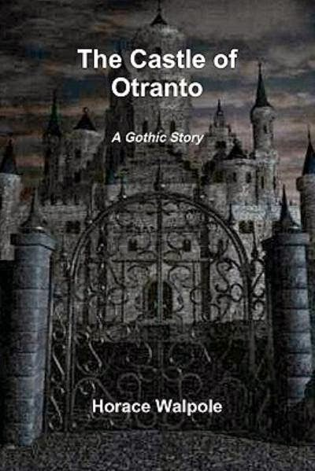
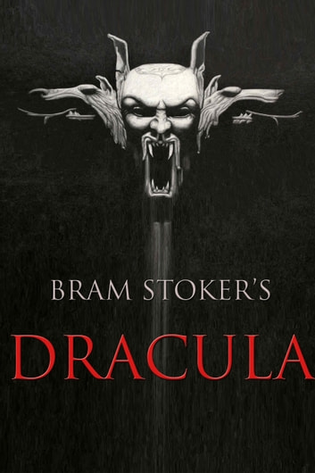
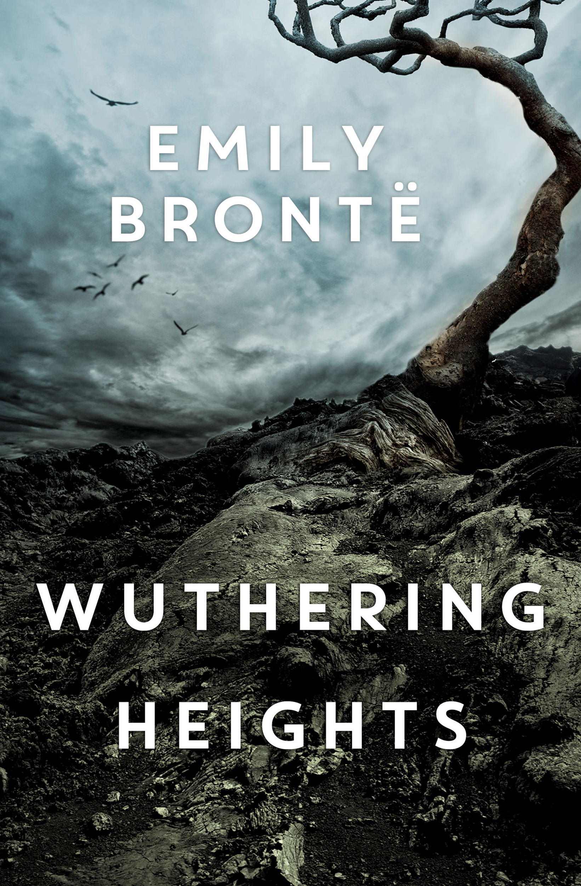
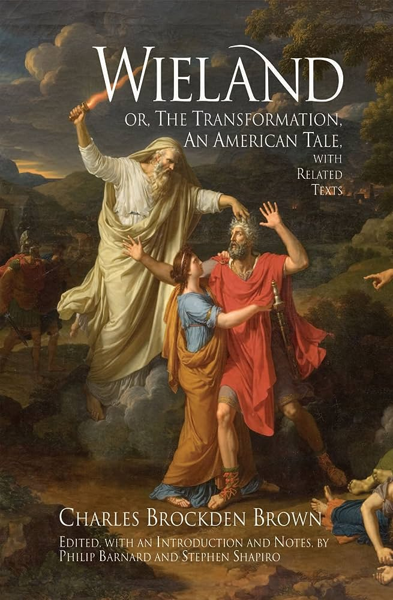

REPRESENTATIVE WORKS
THE CASTLE OF OTRANTO
Generally regarded as the first Gothic novel, The Castle of Otranto was first published in 1764. It weaves in several themes which shape its story, including family lineage and social hierarchy. Manfred is obsessed with retaining his throne after losing his only heir. As his wife Hyppolita is past child-bearing age, Isabella is his only chance of producing another son.
DRACULA
Stoker's Dracula was instrumental in the creation of the vampire trope that has permeated Western popular culture in the forms of novel and film alike. Dracula was well received when it was published, but its success is even better measured by the number of adaptations it inspired.
WUTHERING HEIGHTS
Wuthering Heights feels real with its turbulent study of human emotions, but this realness is intermixed with themes of death, disease, and even the supernatural. Many novels would follow this example, which suggests that Wuthering Heights is a genre-defining classic.
WIELAND
The theme of Wieland is the criticism of religious fanaticism- the religious fanaticism of both Theodore and his father demonstrates the subjectivity of the human experience, involving spontaneous combustion, disembodied voices, and a gruesome murder based on a real-life incident.